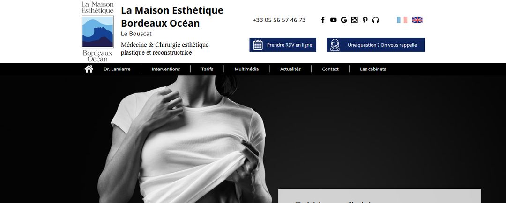

Agence SEO · Bordeaux
Agence SEO chirurgien esthétique à Bordeaux : répondre aux recherches de vos patientes.
À Bordeaux, les patientes cherchent un chirurgien esthétique par quartier, par hôpital, par avis, et distinguent la rhinoplastie médicale de la chirurgicale. Voici ce qu'une agence SEO chirurgien esthétique doit travailler à Bordeaux, à partir de ce que nous avons relevé sur Google le 3 novembre 2026, et d'un chirurgien plasticien que nous avons accompagné entre Bordeaux et Royan.
Mis à jour le · Réseau HANA

- À Bordeaux, les patientes ajoutent un quartier (Pey-Berland, Caudéran), un hôpital (Pellegrin) ou « avis » à leur recherche.
- Sur « chirurgien esthétique Bordeaux », Google affiche une carte avec des fiches, un aperçu IA et Doctolib avant la plupart des sites.
- « Rhinoplastie médicale » et « rhinoplastie ultrasonique » sont des recherches à part : chacune mérite une explication claire, sans promesse.
- HANA a accompagné un chirurgien plasticien qui exerce à Bordeaux et à Royan, et ne travaille qu'avec un seul chirurgien plasticien par ville.
- Le prix est public : 2 050 € HT par mois. Aucune position n'est garantie ; les premiers effets se mesurent en général entre le 4e et le 6e mois.
La page de résultats, du haut vers le bas
Référencement chirurgien esthétique à Bordeaux : quatre étages à occuper.
Le 3 novembre 2026, nous avons cherché « chirurgien esthétique Bordeaux » sur Google, depuis la France, sans compte connecté. Aucune publicité n'était affichée. Une patiente voit quatre étages avant de faire défiler. Une agence SEO chirurgien esthétique à Bordeaux doit les travailler tous, pas seulement le site.
- 01L'aperçu IA de Google
Un résumé rédigé par l'IA de Google, tout en haut. Il reprend les informations qu'il trouve, identiques, sur plusieurs sites. C'est l'enjeu du GEO : être cité par les IA.
- 02La carte et ses fiches
Les fiches Google des cabinets, avec leurs avis. Souvent le premier endroit où l'on clique.
- 03Doctolib
Présent dans les quatre premiers résultats. Votre profil doit dire la même chose que votre site.
- 04Les sites
Des sites de chirurgiens, et des cliniques de la rive droite et d'Aquitaine. C'est là que se joue chaque intervention.
Pour l'étage 02, tout se passe sur votre fiche Google, travaillée chaque jour.
Pey-Berland, Caudéran, Pellegrin
Bordeaux se cherche par quartier et par hôpital.
Parmi les suggestions de Google, plusieurs ajoutent un lieu : un quartier du centre, un quartier résidentiel, le nom de l'hôpital universitaire. Chacune trahit une attente différente. La bonne réponse n'est pas une page par quartier, mais une information juste, écrite au bon endroit.
| Recherche relevée | Ce que veut la patiente | Où y répondre |
|---|---|---|
| chirurgien esthétique bordeaux Pey-Berland | Un cabinet en centre-ville, facile d'accès | Page contact, fiche Google, adresse identique partout |
| chirurgien esthétique bordeaux Caudéran | Un cabinet près de chez elle | Fiche Google bien catégorisée, plan d'accès |
| chirurgien esthétique bordeaux Pellegrin | Un chirurgien lié à l'hôpital, ou le secteur public | Votre parcours et vos lieux d'exercice réels, sur le site et Doctolib |
| chirurgien esthétique bordeaux réduction mammaire | Une intervention précise, souvent avec une question de prise en charge | Une page dédiée : indications, suites, ce qui peut être pris en charge |
Une page « Caudéran » copiée sur une page « Pey-Berland » ne trompe pas Google. Une adresse exacte et constante, si.
Rhinoplastie médicale, ultrasonique
Nommer les techniques que les patientes tapent, sans rien promettre.
Sur « rhinoplastie Bordeaux », Google suggère « prix », « avis », mais aussi « rhinoplastie médicale » et « ultrasonique ». Les patientes ont déjà lu, elles comparent des techniques. Votre site doit leur répondre avec exactitude.
Rhinoplastie médicale
Une correction du profil par injections, sans chirurgie, à l'effet temporaire. Si vous ne la pratiquez pas, une page qui explique la différence avec la rhinoplastie chirurgicale reste utile : elle aide la patiente à savoir ce qui lui correspond.
Rhinoplastie ultrasonique
Un instrument qui travaille l'os du nez par ultrasons. Si vous l'utilisez, dites dans quels cas, et ce qu'elle change ou ne change pas pour les suites. Jamais « sans douleur » ni « résultat garanti ».
Prix et avis
Une page honoraires qui explique ce qui compose le devis, et une fiche Google aux avis réels. Pas de prix d'appel, pas de promotion.

Référence locale
Bordeaux et Royan : un chirurgien plasticien que nous avons accompagné.
Nous avons accompagné le Dr Lemierre, chirurgien plasticien qui exerce à Bordeaux et à Royan. Son site est présenté avec les autres sur notre page Références.
Pour le SEO d'un chirurgien plasticien à Bordeaux, exercer aussi dans une seconde ville pose des questions concrètes : comment être trouvé dans les deux sans dupliquer ses pages, et sans brouiller Google sur l'adresse principale. Voici les principes que nous appliquons dans ce cas.
- Une fiche Google pour chaque lieu de consultation réel, jamais pour une simple adresse postale
- Les mêmes nom, spécialité et coordonnées sur le site, les fiches, Doctolib et les annuaires
- Une page qui dit clairement ce qui se fait dans chaque lieu : consultation, intervention, suivi
- Des pages d'interventions uniques, qui citent les deux villes sans être copiées
« Les mieux notés »
À Bordeaux, l'avis vient en premier dans la recherche.
« Chirurgien esthétique Bordeaux avis » arrive en tête des suggestions, et « les mieux notés » les suit. Les avis Google pèsent sur votre visibilité Google à Bordeaux autant que sur la décision de la patiente.
Nous répondons à chaque avis sous 24 h, sans jamais confirmer qu'une personne est votre patiente. Nous n'achetons ni n'écrivons d'avis : nous vous aidons à en obtenir de réels. Pour un avis difficile, notre guide avis négatif sur Google donne des exemples de réponses neutres.
Par où commencer
Vos six premiers mois, si vous exercez à Bordeaux.
Chaque cabinet part d'un point différent. Voici l'ordre de travail que nous suivons en général, adapté à ce que nous avons relevé sur Google à Bordeaux.
- M1Remettre les adresses d'aplomb
Site, fiche Google, Doctolib, annuaires de santé, clinique où vous opérez : une seule façon d'écrire votre nom, votre spécialité et vos lieux d'exercice.
- M2Compléter la fiche Google
Bonne catégorie, photos réelles du cabinet, horaires, premières publications. Une réponse à chaque avis déjà publié.
- M3Les interventions qui comptent
Deux pages stratégiques par mois, en commençant par celles que vous voulez développer : rhinoplastie, réduction mammaire, ou une autre.
- M4Les questions des patientes
Deux contenus experts par mois : rhinoplastie médicale ou chirurgicale, ce que comprend un devis, les suites et l'éviction sociale (le temps d'arrêt avant de reprendre une vie normale).
- M6Mesurer
Positions sur les recherches bordelaises, appels depuis la fiche Google, et ce que ChatGPT, Gemini et Perplexity répondent sur votre nom.
Les premiers effets se mesurent en général entre le 4e et le 6e mois. Personne ne peut vous garantir une position : vous payez un travail daté, visible chaque jour dans l'Espace HANA, votre tableau de bord en ligne. Pour comparer avec d'autres propositions, notre guide agence SEO chirurgien esthétique donne huit questions à poser avant de signer.
Votre ville
Un seul chirurgien plasticien par ville.
Une agence qui suit deux plasticiens bordelais leur vend les mêmes places. HANA a été créé pour éviter ce conflit d'intérêts : nous ne signerons jamais votre concurrent direct.
Le prix est public et identique pour tous : 2 050 € HT par mois, site entretenu, fiche Google, contenus, visibilité IA et visio mensuelle compris. Le détail est sur la page Tarifs. Après six mois, l'arrêt est possible avec un mois de préavis.
Questions fréquentes
Les questions qui reviennent.
Quelle agence SEO choisir pour un chirurgien esthétique à Bordeaux ?
Une agence spécialisée en chirurgie plastique, qui travaille votre site, votre fiche Google, vos avis et votre visibilité dans les IA, et qui ne suit pas un confrère de votre ville. Chez HANA, l'exclusivité est contractuelle.
Comment apparaître sur « chirurgien esthétique Bordeaux Pellegrin » ?
Si vous opérez ou consultez à l'hôpital Pellegrin, dites-le sur votre site, votre fiche Google et Doctolib, avec les mêmes mots. Si ce n'est pas le cas, ne cherchez pas à capter cette recherche.
Qu'est-ce que la rhinoplastie médicale ?
C'est une correction du profil du nez par injections, sans chirurgie, dont l'effet est temporaire. Elle ne remplace pas une rhinoplastie chirurgicale. Une page qui explique la différence répond à une recherche fréquente à Bordeaux.
Combien coûte le référencement d'un chirurgien esthétique à Bordeaux ?
Chez HANA, 2 050 € HT par mois, tout compris, le même prix dans chaque ville. La création ou la refonte du site est à part, à partir de 2 000 € HT, facturée une fois.
Comment être visible à Bordeaux et à Royan en même temps ?
Avec une fiche Google par lieu de consultation réel, des adresses identiques partout, et des pages qui disent clairement ce qui se fait dans chaque lieu.
Avez-vous des références à Bordeaux ?
Oui. Nous avons accompagné le Dr Lemierre, chirurgien plasticien à Bordeaux et Royan. Les autres sites sont présentés sur notre page Références.
Pour aller plus loin
Ça pourrait vous intéresser.


Diagnostic de visibilité offert
Parlons de Bordeaux.
Dites-nous votre ville et votre spécialité. Sous 48 h ouvrées, vous recevez un diagnostic écrit : où vous apparaissez sur dix recherches que font vos patient(e)s, l'état de votre fiche Google, et ce que ChatGPT et Gemini répondent aujourd'hui à quelqu'un qui cherche un chirurgien plasticien chez vous.
Ensuite, trente minutes en visio pour en parler. Nous vous montrons deux cas chiffrés et anonymisés, issus de projets que nous avons menés, et nous vous disons si votre ville est encore libre. Si c'est pertinent, nous vous faisons une proposition, ou un devis pour votre site. Sans engagement.
- 06 99 30 58 73Réseau HANA. Du lundi au vendredi, 9 h à 19 h.
- contact@hanahealth.frRéponse sous 24 h ouvrées.
- France, Belgique, SuisseRendez-vous en visio, où que vous soyez.